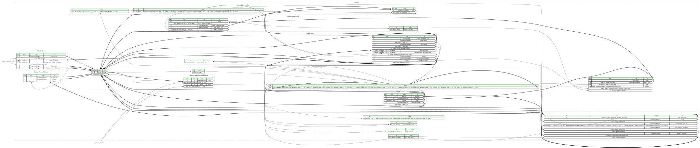

This page hosts a formal specification of Zchunk using Kaitai Struct. This specification can be automatically translated into a variety of programming languages to get a parsing library.

meta:
id: zchunk
title: Zchunk
file-extension:
- zck # magic '\0ZCK1' (`lead.is_detached_header` is `false`)
- zhr # magic '\0ZHR1' (`lead.is_detached_header` is `true`)
xref:
justsolve: Zchunk
license: CC0-1.0
ks-version: '0.10'
endian: le
doc-ref: https://github.com/zchunk/zchunk/blob/99e51afa38c723e7c25834c2c3b305d20ef55d04/zchunk_format.txt
seq:
- id: lead
type: header_lead
- id: header_rest
size: lead.len_header_rest.value
type: header_without_lead
- id: dict
size: header_rest.index.len_dict.value
doc: |
Custom dictionary used when compressing each chunk. It's compressed itself
without a dictionary.
The official zchunk specification calls this section "Compressed Dict".
It's also called a "dictionary chunk". `zck_read_header -c` presents it as
"chunk 0" (which is always shown in the chunk table, but can have size 0
if the dictionary is not in use).
- id: chunks
size: header_rest.index.chunks_metadata[_index].len_chunk.value
repeat: expr
repeat-expr: header_rest.index.chunks_metadata.size
if: not lead.is_detached_header
doc: |
Chunks of data, each compressed with the custom dictionary `dict` (if
applicable).
They are not included in a detached header (`.zhr`) file. Detached headers
contain the dictionary, but none of the data chunks.
types:
header_lead:
seq:
- id: magic
size: 5
valid:
any-of:
- '[0x00, 0x5a, 0x43, 0x4b, 0x31]' # '\0ZCK1'
- '[0x00, 0x5a, 0x48, 0x52, 0x31]' # '\0ZHR1'
doc: |
There are two valid magic numbers for zchunk files:
* `'\0ZCK1'` identifies a zchunk version 1 file (`.zck`)
* `'\0ZHR1'` identifies a zchunk version 1 detached header file (`.zhr`)
- id: overall_checksum_type
type: checksum_type
doc: |
Type of the checksum used for `header_checksum` and
`_root.header_rest.preface.data_checksum`.
- id: len_header_rest
type: compressed_integer
doc: Size of the header, not including the lead
- id: header_checksum
size: overall_checksum_type.len_checksum
doc: |
Checksum of the entire header, which consists of `_root.lead` and
`_root.header_rest` (i.e. everything from the beginning of the file to
the end of `_root.header_rest`), not including the `header_checksum`
field itself (i.e. the input for the checksum algorithm is a
concatenation of the bytes preceding the `header_checksum` field with
the bytes following it).
For detached headers, the checksum is calculated as if the `magic`
field were set to `'\0ZCK1'`, so that it matches the checksum in the
full zchunk file.
instances:
is_detached_header:
value: magic[2] == 0x48
doc: |
Determines whether this file is a zchunk detached header (`.zhr`). If
not, it is a complete zchunk file (`.zck`).
header_without_lead:
seq:
- id: preface
type: preface
- id: len_index
type: compressed_integer
- id: index
size: len_index.value
type: index
- id: num_signatures
type: compressed_integer
valid:
expr: _.value == 0
doc: |
Must be 0. The reference implementation also rejects any file with a
non-zero "Signature count", throwing a fatal error stating "Signatures
aren't supported yet" - see
[`src/lib/header.c:259-264`](https://github.com/zchunk/zchunk/blob/99e51afa38c723e7c25834c2c3b305d20ef55d04/src/lib/header.c#L259-L264).
Although the structure of signatures is defined [in the official
textual
specification](https://github.com/zchunk/zchunk/blob/99e51afa38c723e7c25834c2c3b305d20ef55d04/zchunk_format.txt#L219-L252),
no signature types are defined, and as of this writing no publicly
known implementation generates or interprets these signatures.
Therefore, we've decided not to implement them here either.
For more details, see
<https://github.com/kaitai-io/kaitai_struct_formats/pull/539#discussion_r3713109887>.
preface:
seq:
- id: data_checksum
size: _root.lead.overall_checksum_type.len_checksum
doc: |
Total data checksum. Checksum of everything after the header,
including the compressed dictionary (`_root.dict`) and all compressed
chunks (`_root.chunks`). The type of this checksum is
`_root.lead.overall_checksum_type.value`.
If `has_uncompressed_source` is true, this checksum must not be
checked and should not be generated. In that case, the reference
implementation writes it as all zeros - see the sample file
[`mini-uncomp-cksums.zck`](https://github.com/kaitai-io/kaitai_struct_samples/blob/1d2fe11c971fb7e86f343b77a1ed341a0217e86a/archive/zchunk/README.md#mini-uncomp-cksumszck).
- id: flags
type: compressed_integer
valid:
expr: _.value <= 0b111
doc: |
Compressed integer containing a bitmask of the flags. All unused flags
MUST be set to 0. If a decoder sees a flag set that it doesn't
recognize, it MUST exit with an error.
doc-ref: https://github.com/zchunk/zchunk/blob/99e51afa38c723e7c25834c2c3b305d20ef55d04/zchunk_format.txt#L78-L81
- id: compression_type_int
type: compressed_integer
-affected-by: 88 # inlining
valid:
# This ensures that the compression type is known. If
# [inlining](https://github.com/kaitai-io/kaitai_struct/issues/88) was
# implemented, we could use `enum: compression_types` directly in this
# field and use `valid/in-enum: true` to achieve the same effect, but
# it's not implemented.
expr: |
_.value == compression_types::none.to_i or
_.value == compression_types::zstd.to_i
doc: |
Raw integer, don't read this field - access `compression_type`
instead.
- id: num_optional_elements
type: compressed_integer
valid:
expr: _.value >= 1
if: has_optional_elements
doc: |
If present, it must be at least 1. This is because if there are no
optional elements, `has_optional_elements` must be false, and then
neither this field nor `optional_elements` is present.
doc-ref: https://github.com/zchunk/zchunk/blob/99e51afa38c723e7c25834c2c3b305d20ef55d04/zchunk_format.txt#L99-L102
- id: optional_elements
type: optional_element
repeat: expr
repeat-expr: num_optional_elements.value
if: has_optional_elements
instances:
has_data_streams:
value: flags.value & 0b1 != 0
has_optional_elements:
value: flags.value & 0b10 != 0
has_uncompressed_source:
value: flags.value & 0b100 != 0
doc: |
The file may be applied against an uncompressed source. This adds an
uncompressed checksum to every index entry, including the dictionary.
compression_type:
value: compression_type_int.value
enum: compression_types
optional_element:
-webide-representation: 'ID {element_id.value:dec}'
seq:
- id: element_id
type: compressed_integer
- id: len_data
type: compressed_integer
- id: data
size: len_data.value
index:
seq:
- id: chunk_checksum_type
type: checksum_type
doc: |
Type of the checksum used for `dict_checksum` and for all
`chunks_metadata[...].chunk_checksum` and
`chunks_metadata[...].uncompressed_chunk_checksum`.
- id: num_chunks
type: compressed_integer
valid:
expr: _.value >= 1
doc: |
Number of chunks, **including** the dictionary chunk.
Must be at least 1, because the dictionary chunk is always present,
even if it is empty. The reference implementation also fails when the
number of chunks is 0, see
[`src/lib/index/index_read.c:181-184`](https://github.com/zchunk/zchunk/blob/99e51afa38c723e7c25834c2c3b305d20ef55d04/src/lib/index/index_read.c#L181-L184).
- id: dict_stream
type: compressed_integer
valid:
expr: _.value == 0
if: _parent.preface.has_data_streams
doc: If present, it must always be 0.
doc-ref: https://github.com/zchunk/zchunk/blob/99e51afa38c723e7c25834c2c3b305d20ef55d04/zchunk_format.txt#L159-L162
- id: dict_checksum
size: chunk_checksum_type.len_checksum
- id: uncompressed_dict_checksum
size: chunk_checksum_type.len_checksum
if: _parent.preface.has_uncompressed_source
doc: |
Checksum of the uncompressed dictionary. It has no real use, as the
uncompressed source won't have a dictionary.
- id: len_dict
type: compressed_integer
- id: len_uncompressed_dict
type: compressed_integer
- id: chunks_metadata
type: |
chunk(
chunk_checksum_type.len_checksum,
_parent.preface.has_data_streams,
_parent.preface.has_uncompressed_source
)
repeat: expr
repeat-expr: num_data_chunks
doc: |
Metadata of the data chunks. The dictionary is chunk 0 and its
metadata is stored in the `*dict*` fields above, so there is one fewer
entry here than indicated by `num_chunks`.
instances:
num_data_chunks:
value: num_chunks.value - 1
doc: |
Number of data chunks. `num_chunks` counts the dictionary as chunk 0,
so it is one greater than this number.
chunk:
params:
- id: len_checksum
type: u4
- id: has_data_streams
type: bool
- id: has_uncompressed_source
type: bool
seq:
- id: chunk_stream
type: compressed_integer
if: has_data_streams
- id: chunk_checksum
size: len_checksum
- id: uncompressed_chunk_checksum
size: len_checksum
if: has_uncompressed_source
doc: |
Checksum of the uncompressed chunk. Used to detect whether a chunk
from an uncompressed source is identical to the compressed chunk.
- id: len_chunk
type: compressed_integer
- id: len_uncompressed_chunk
type: compressed_integer
# Common types
checksum_type:
-webide-representation: '{value}'
seq:
- id: raw
type: compressed_integer
-affected-by: 88 # inlining
valid:
# This ensures that the checksum type is known. If
# [inlining](https://github.com/kaitai-io/kaitai_struct/issues/88) was
# implemented, we could use `enum: checksum_types` directly in this
# field and use `valid/in-enum: true` to achieve the same effect, but
# it's not implemented.
expr: len_checksum != 0
doc: |
Raw integer, don't read this field - access `value` instead.
instances:
value:
value: raw.value
enum: checksum_types
len_checksum:
value: |
value == checksum_types::sha1 ? 20 :
value == checksum_types::sha256 ? 32 :
value == checksum_types::sha512 ? 64 :
value == checksum_types::sha512_128 ? 16 :
0
compressed_integer:
doc: |
Like `/common/vlq_base128_le` (LEB128), but the logic of the
"continuation" flag in the most significant bit is inverted, so instead of
`has_next`, it is called `is_last` (if the highest bit is set to zero, it
means "continue", whereas in standard LEB128, the highest bit set to
**one** means "continue"). Therefore, we cannot simply import
`/common/vlq_base128_le` and use it, because it is incompatible.
-webide-representation: '{value:hex} = {value:dec}'
seq:
- id: groups
type: group(_index)
repeat: until
repeat-until: _.is_last
types:
group:
meta:
bit-endian: be
doc: |
One byte group, clearly divided into 7-bit "value" chunk and 1-bit "continuation" flag.
-webide-representation: '{value}'
params:
- id: idx
type: s4
seq:
- id: is_last
type: b1
valid: 'idx == 9 ? true : is_last'
doc: |
If `true`, then this is the last byte of the compressed integer.
Since this implementation only supports serialized values up to 10
bytes, this must be `true` in the 10th group (`groups[9]`).
- id: value
type: b7
valid:
# See the comment in `/common/vlq_base128_le.ksy` for why the
# `.as<u8>` is needed (it's a workaround for a bug in KSC 0.11).
max: '(idx == 9 ? 1 : 0b111_1111).as<u8>'
doc: |
The 7-bit (base128) numeric value chunk of this group
Since this implementation only supports integer values up to 64 bits,
the `value` in the 10th group (`groups[9]`) can only be `0` or `1`
(otherwise the width of the represented value would be 65 bits or
more, which is not supported).
instances:
len:
value: groups.size
value:
value: |
(groups[0].value
| (len >= 2 ? (groups[1].value << 7) : 0)
| (len >= 3 ? (groups[2].value << 14) : 0)
| (len >= 4 ? (groups[3].value << 21) : 0)
| (len >= 5 ? (groups[4].value << 28) : 0)
| (len >= 6 ? (groups[5].value << 35) : 0)
| (len >= 7 ? (groups[6].value << 42) : 0)
| (len >= 8 ? (groups[7].value << 49) : 0)
| (len >= 9 ? (groups[8].value << 56) : 0)
| (len >= 10 ? (groups[9].value << 63) : 0)).as<u8>
doc: Resulting unsigned value as normal integer
enums:
checksum_types:
0: sha1
1: sha256
2: sha512
3: sha512_128 # first 128 bits of sha512 checksum
compression_types:
0: none
2: zstd
{kind=link}